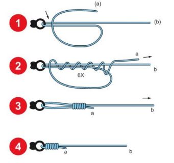
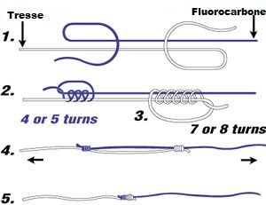

Keranguilis - Live
Mailles été 2025
Bar 42 cm + cis 2/j/p
Mulet 30 cm
Dorade royale 23 cm + cis
Lieu jaune 30 cm + cis 2/j/p
Chinchard 15 cm
Maquereau 20 cm + cis
Congre 60 cm
Orphie 30 cm
Sole 25 cm + cis
Homard 9 cm + cis (depuis 2025, 8,7cm avant)
Etrilles 6,5 cm
Araignée 12 cm
Langouste 11 cm + cis
Bouquet 5 cm
Tourteau 15 cm
Couteau 10 cm
Météo : Meteoblue, Marine
Manuels : Pescadou, Sondeur
Cartes : Gmaps,
TideMaps,
Shom
Base de données


Weather data (https://content.meteoblue.com/en/business-solutions/weather-apis) provided by meteoblue (https://www.meteoblue.com)